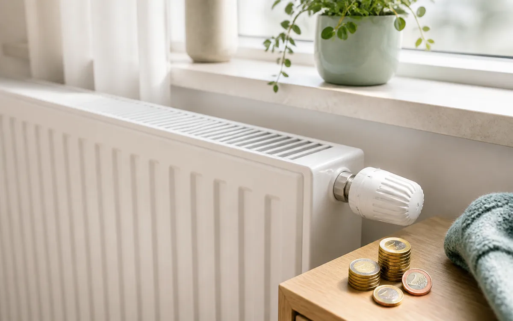
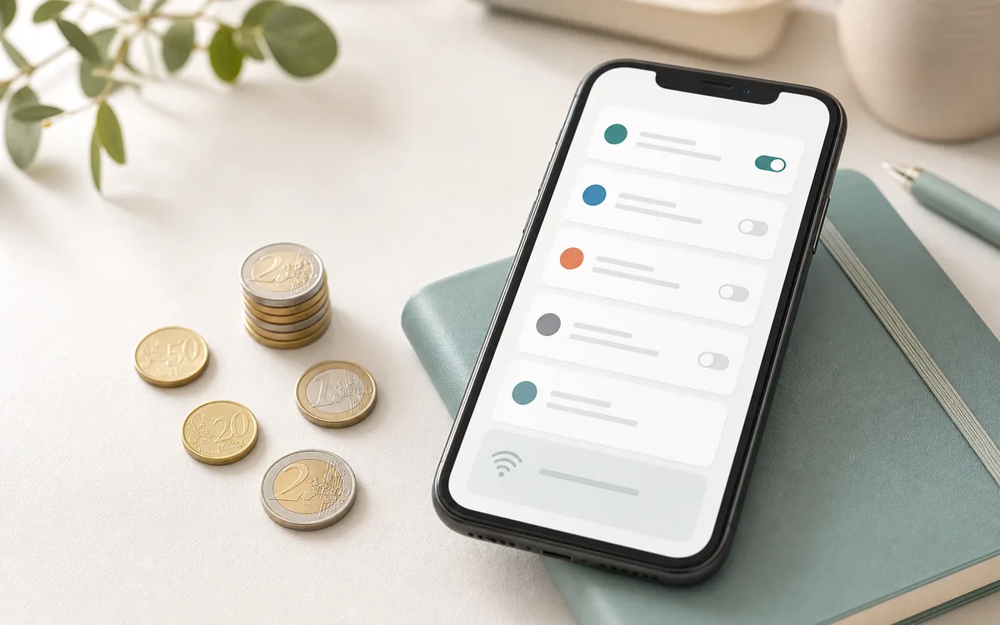
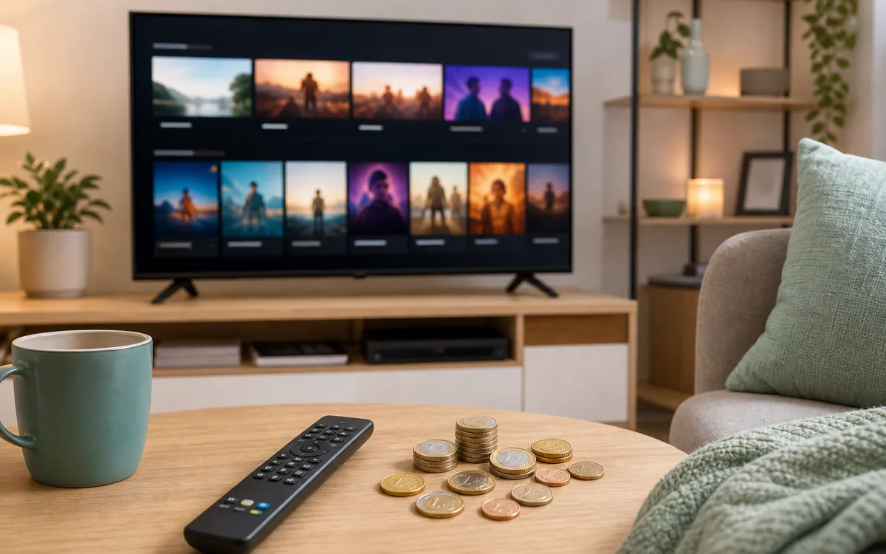
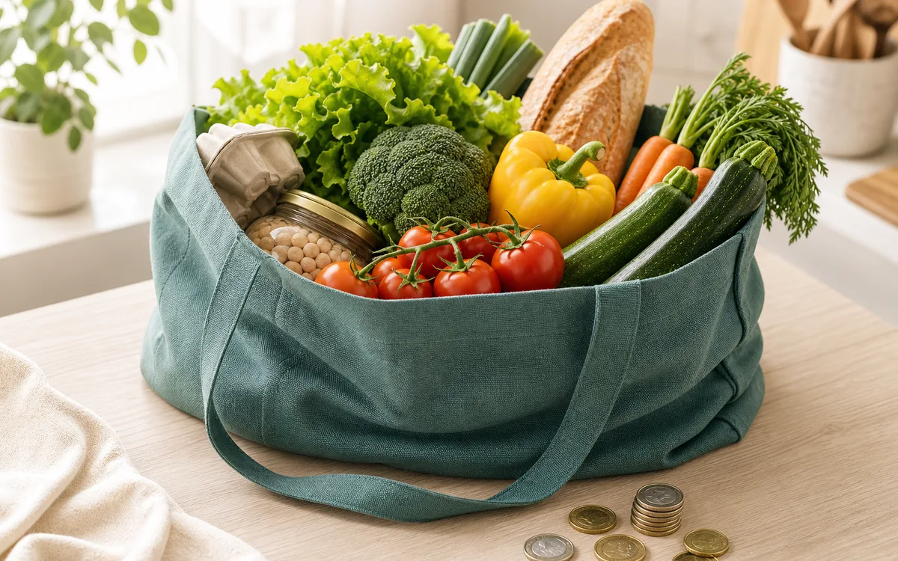
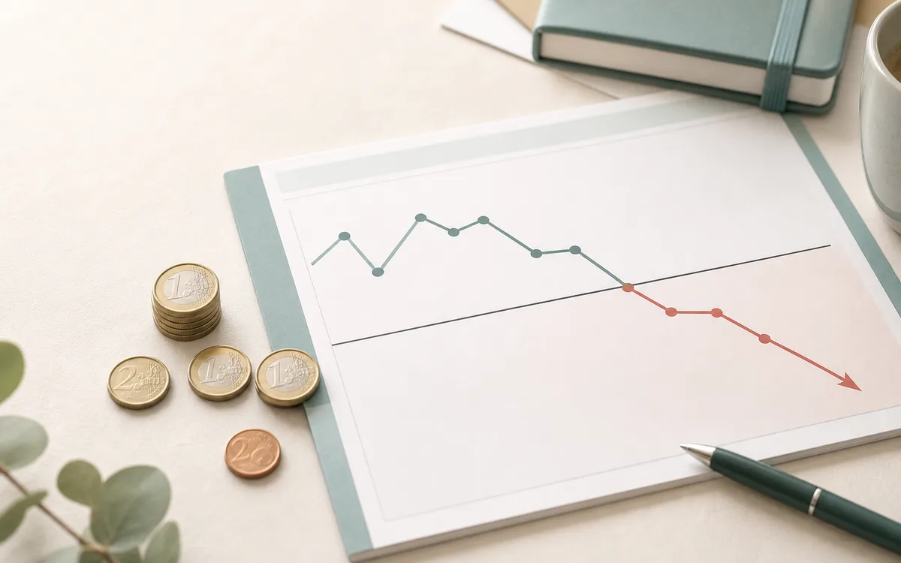
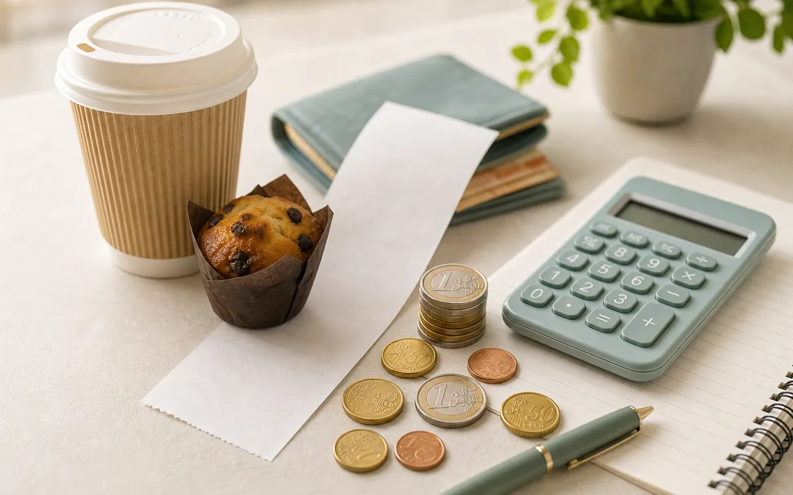

Grip op je geld in 5 stappen
Dit stappenplan is gebaseerd op de methode die budgetcoaches gebruiken, hier uitgewerkt zodat iedereen het kan volgen. Je hoeft niet alles in één keer te doen: elke stap apart levert al iets op.
STAP 1 Breng je uitgaven in kaart
Je kan pas besparen als je weet waar je geld naartoe gaat. Overloop je rekeninguittreksels van de voorbije maanden en verdeel alles in categorieën: boodschappen, vaste kosten, vervoer, vrije tijd, abonnementen, enzovoort.
- Gebruik een eenvoudige gratis budgetapp (Wakosta budgetplanner) of een blad papier.
- Vul niet elke dag in, maar om de paar dagen.
- Let ook op kleine, terugkerende uitgaven.
- Begin grof. Een ruwe verdeling in 6 à 8 categorieën is genoeg om de grootste lekken te zien.
STAP 2 Bespaar op je maandelijkse kosten
Vaste kosten lopen elke maand automatisch door, ook als je ze niet meer gebruikt. Dit is vaak het snelst te besparen, zonder dat je er elke dag mee bezig bent.
- Overloop al je abonnementen: streaming, fitness, kranten, verzekeringen. Gebruik je het nog?
- Vergelijk energie (V-test) en telecom (Bestetarief.be) en stap over als het goedkoper kan.
- Controleer of je recht hebt op het sociaal tarief of andere premies.

Energie & water
Sociaal tarief, vergelijken en verbruik verlagen.

gsm-abonnenement, internet en streaming
Goedkoper bellen, surfen en streamen.

Andere maandelijkse kosten
Streaming, fitness, verzekeringen en goede doelen.
STAP 3 Pak andere uitgaven aan
Naast veel kleine uitgaven zijn er soms enkele grote lekken: een dure gewoonte, een lening, of een betaling waar je geen waar voor krijgt.
- Persoonlijke leningen voor dagelijkse uitgaven of luxe worden afgeraden.
- Dure gewoontes (roken, dagelijks frisdrank of takeaway) kosten vaak honderden euro's per maand.
- Onbekende of louche domiciliëringen: controleer wat er maandelijks van je rekening gaat.
Praktijkvoorbeeld: een verborgen, ongewenste betaling
Bij een gezin ging elke maand geld naar een bedrijf waarvan ze het bestaan amper kenden: een verzekering die ongemerkt was meegekomen bij de aankoop van een toestel. Test-Aankoop en reviewsites bevestigden veel klachten. De aanpak: 1) de domiciliëring blokkeren bij de bank, 2) per aangetekende brief opzeggen bij het bedrijf.

Boodschappen
Huismerken, slimmer winkelen en minder weggooien.

Schulden & oplichting
Leningen, ongewenste betalingen en oplichting.

Vele kleintjes
Hoe kleine dagelijkse uitgaven op een jaar oplopen.
STAP 4 Bouw een buffer van 3 tot 6 maanden
Een spaarbuffer geeft rust en vangt onverwachte kosten op. Een vaak gehanteerde vuistregel: hou drie tot zes maanden vaste lasten (of inkomen) opzij. Voor een koppel is dat de som van beide inkomens, maal de gekozen aantal maanden.
Praktijkvoorbeeld: een buffer opbouwen in 3 jaar
Een koppel rekende uit dat zes maanden samen neerkwam op € 22.000. Door dat doel te spreiden over drie jaar (36 maanden) werd het behapbaar: € 22.000 / 36 = ongeveer € 600 per maand sparen. Een groot doel werd zo een haalbare maandelijkse stap.
→ Gids: sparen en je buffer opbouwen
STAP 5 Spaar gericht voor je doelen
Heb je een concreet doel, zoals een reis of een grote aankoop? Reken terug naar een maandbedrag, en verschuif waar nodig bestaande kosten naar je doel.
Praktijkvoorbeeld: sparen voor een reis
Een gezin wilde op reis voor € 5.000. De rekening: € 5.000 / 12 = ongeveer € 416 per maand. Door enkele ongebruikte abonnementen op te zeggen en dat geld door te schuiven naar het reisdoel, kwam de reis in beeld zonder lening.
Maak er een gewoonte van
Zet elk jaar één dag in je agenda om je financiële gezondheid te checken: welke keuzes van vorig jaar kloppen nog, en wat pas je aan?
Dit stappenplan is algemene informatie, geen persoonlijk financieel advies. Bedragen zijn voorbeelden ter illustratie. Voor begeleiding op maat kan je gratis terecht bij het CAW of je OCMW.